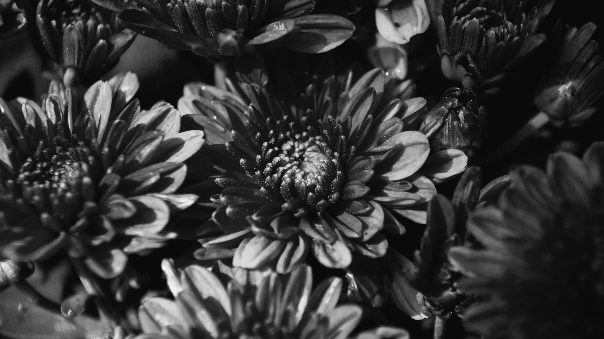

Like photo 1, I wanted to reach for a super cinematic energy. Though I empahzied my colors in my other photo, I thought choosing a black and white filter would allow the highlights and shadows of the flower to be excentuated.